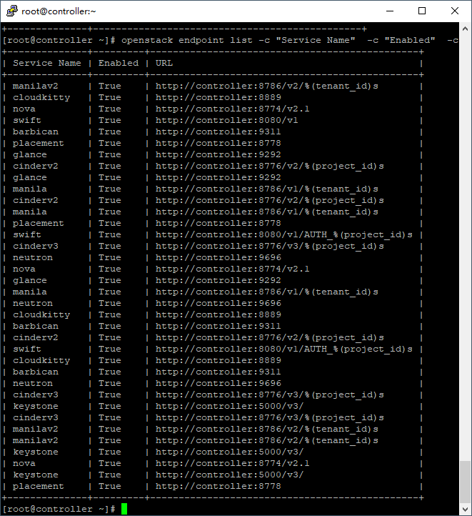
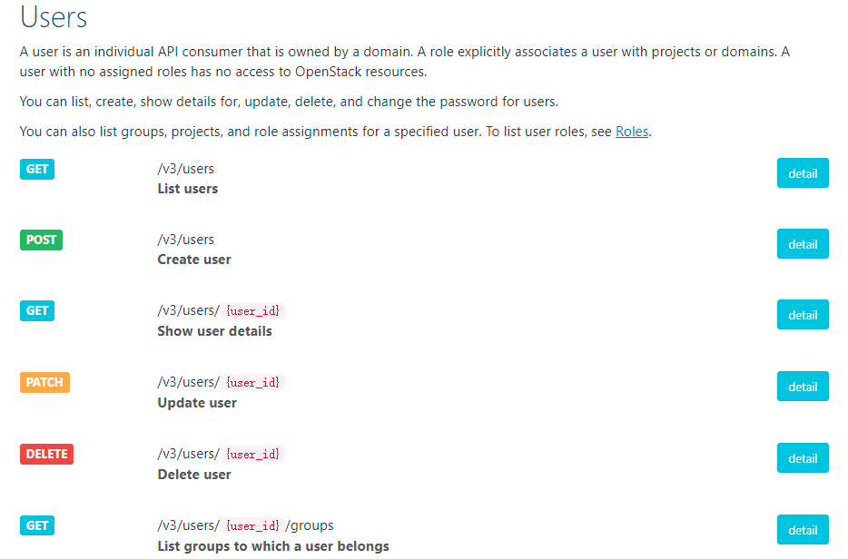
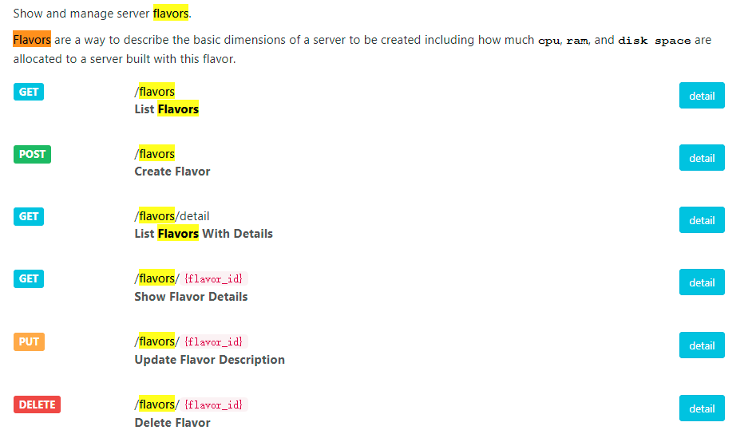
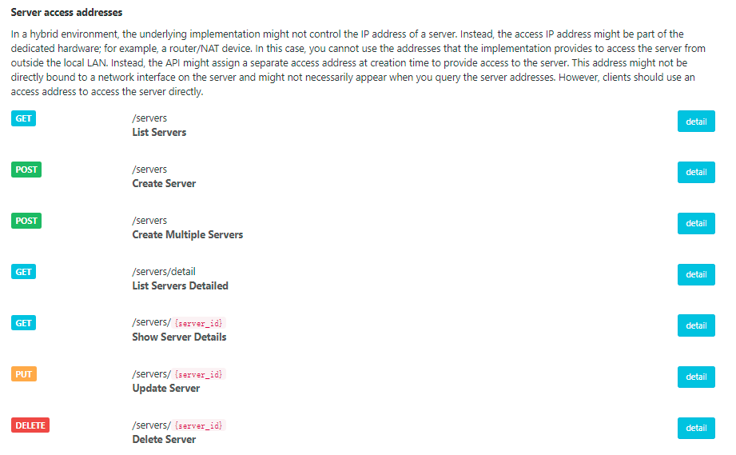
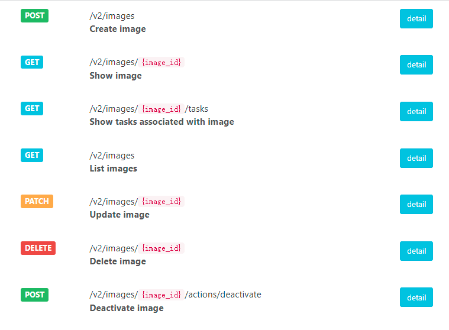
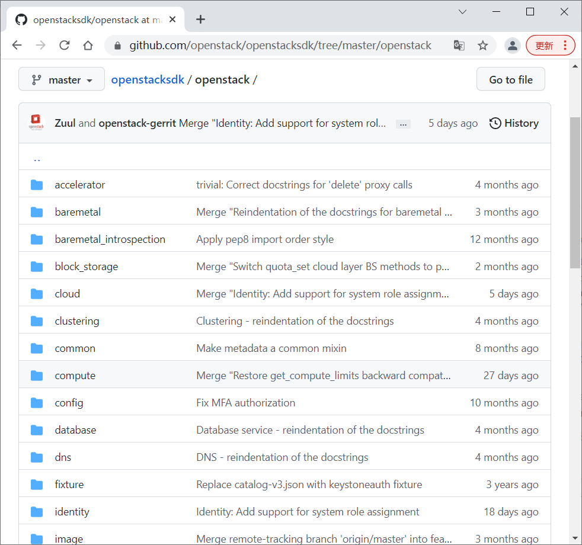

私有云：(12)Python调用OpenStack_API案例
案例描述
通过本模块课程学习，主要掌握以下内容：
了解Python语法、python-keystoneclient库和OpenStack APIs。
能够使用Python编写代码，利用python-keystoneclient库查询Keystone项目。
了解使用OpenStack Python SDK进行Python运维脚本开发。
（4）掌握用户、镜像、实例类型等管理代码Python语法编写方法。
案例一：Python开发环境准备
任务目标
了解python-keystoneclient库。
了解Python语法。
使用Python编写代码，利用python-keystoneclient库查询Keystone项目。
案例准备
节点规划见表1。
表1节点规划
| IP | 主机名 | 节点 |
|---|---|---|
| 172.128.11.18 | controller | OpenStack控制节点 |
使用all-in-one云主机进行实验，安装Python3环境，并导入相应的依赖包。
案例实施
查看Python版本，命令如下:
1 | [root@controller ~]# ls |
使用提供的whl文件安装依赖，命令如下：
1 | [root@controller ~]# cd Python-api |
安装之后可以使用命令查看是否被成功安装，命令如下：
1 | [root@controller ~]# pip3 list |
至此，基本环境安装完毕。
案例二：通过RESTful编写Python运维
任务目标
了解OpenStack APIs。
了解用户、镜像、实例类型等管理代码Python语法编写方法。
在OpenStack云中，可以使用OpenStack API来启动服务器云主机，创建镜像、给实例和镜像分配元数据、创建存储容器和对象以及完成其他相关的动作。
OpenStack APIs 参考官方文档https://docs.openstack.org/train/api/。针对每个服务都提供了Restful 接口说明。以下给出使用Python调用APIs实现OpenStack运维。
案例准备
沿用案例一的all-in-one云主机环境进行实验。
案例实施
登录OpenStack平台，可以查看APIs的网站与端口。
1 | [root@controller ~]# source /etc/keystone/admin-openrc.sh |
查询Endpoint接口如图1所示：

图1
认证服务：用户管理
接口说明
接口官网：https://docs.openstack.org/api-ref/identity/。
当前版本为V3.0.网站为：https://docs.openstack.org/api-ref/identity/v3/index.html
Identity服务生成访问OpenStack服务REST API的认证令牌。客户端通过向身份验证服务提供有效凭据来获取此令牌（Token）和其他服务API的URL端点。
每次向OpenStack服务请求REST API时，都需要在X-Auth-Token请求头中提供自己的认证令牌（Token）。
和大多数OpenStack项目一样，OpenStack Identity通过基于角色访问控制（RBAC）的方法定义策略规则来保护API。
Identity服务配置文件设置存储这些规则的JSON策略文件的名称和位置。
V3 API为所有GET请求实现了HEAD。 每个HEAD请求包含与对应的GET API相同的报头和HTTP状态代码。
以下以用户管理的Python实现案例，展示如何调用认证服务的APIs。具体APIs参考如下地址（如图2所示）：
https://docs.openstack.org/api-ref/identity/v3/index.html#users

图2
以下展示User增删查改的管理Python实现代码。
创建用户接口：POST /v3/users
请求参数见表2：
表2 请求参数
| Name | In | Type | Description |
|---|---|---|---|
| user | body | object | 用户 |
| default_project_id (Optional) | body | string | 项目ID |
| domain_id (Optional) | body | string | 区域ID |
| federated (Optional) | body | list | 用户联邦列表 |
| enabled (Optional) | body | boolean | 是否启用 |
| name | body | string | 用户名称 |
| password (Optional) | body | string | 密码 |
| extra (Optional) | body | string | 额外信息 |
| options (Optional) | body | object | 选项 |
创建用户body json案例如下：
1 | { |
其他接口参数基本一致，可以查看每个接口的request与response的数据格式。
代码实现
创建apis_user_manager.py文件实现，用户的创建、查找、删除、更新。代码如下：
1 | # Copyright 2021~2022 The Cloud Computing support Teams of ChinaSkills. |
代码验证
① 登录通过账号密码方式：使用get_auth_token()方法，通过该方法获取Token值。
② 封装了user_manager类，通过python request库实现对API的网络访问，实现对用户的增删查改操作。
- 创建：POST /v3/users
- 查询：get /v3/users
- 删除：delete /v3/users/id
- 更改密码：/v3/users/id/password”
具体可以通过官网的API说明。
③ 执行user_manager的每个方法进行代码测试，通过openstack user命令行或Dashboard界面进行研究者。
修改apis_user_manager.py的if name == ‘__main__’:函数中OpenStack的IP、domain、user、password，执行apis_user_manager.py，进行查询所有、创建、根据ID查询、更新密码和删除验证。在apis_user_manager.py的if name == ‘main‘最后添加如下代码：
1 | #get all user |
然后执行apis_user_manager.py，结果如下：
1 | [root@controller ~]# python3 apis_user_manager.py |
计算服务：实例类型管理
接口说明
计算服务的API官网：
https://docs.openstack.org/api-guide/compute/index.html
Nova项目提供了RESTful HTTP服务：OpenStack Compute API。这些API提供了对计算资源的大规模可伸缩、随需应变、自服务访问能力。
API版本：
在Mitaka发布之后，每个Nova部署都有以下服务端点：
- / -可用版本列表
- /v2 -计算API的第一个版本，使用扩展（称之为计算API v2.0）
- /v2.1 -相同的API，只是使用了微版本
文档只要给出v2.1 API接口说明。
以下以主机类型（flavors）管理为案例，实现Python代码。具体APIs说明参见：https://docs.openstack.org/api-ref/compute/
接口清单如图3所示，涉及查询（Get）、创建（POST）、更新（PUT）与删除（DELETE）。

图3
具体参看：
https://docs.openstack.org/api-ref/compute/?expanded=list-flavors-detail,list-flavors-with-details-detail
创建Flavor使用接口：POST /flavors。创建flavor需要云管理员（administrators），调用正常响应码为200，错误响应码为badRequest(400), unauthorized(401), forbidden(403), conflict(409)。
请求（Request）参数见表3：
表3 请求（Request）参数说明
| 名称 | 位置 | 类型 | 描述 |
|---|---|---|---|
| flavor | body | object | Flavor一种主机类型。 |
| name | body | string | 名称。 |
| description (Optional) | body | string | 描述可选（限制65535字符），自V2.55版本开始。 |
| id (Optional) | body | string | Flavor的ID，缺省为uuid。 |
| ram | body | integer | 内存大小（单位MiB）。 |
| disk | body | integer | 磁盘大小（单位GiB）。. |
| vcpus | body | integer | 虚拟CPU个数(vCPUs)。 |
| OS-FLV-EXT-DATA:ephemeral (Optional) | body | integer | 临时磁盘的大小（单位GiB）。 |
| swap (Optional) | body | integer | 交换磁盘大小，单位为MiB。 |
| rxtx_factor (Optional) | body | float | 如果网络后端支持QOS扩展，将在端口上设置的接收/发送因子（作为一个浮动）。否则将被忽略。它的默认值是1.0。 |
| os-flavor-access:is_public (Optional) | body | boolean | 主机类型是公用还是项目专有？默认公用。 |
响应（Response）说明见表4：
表4 响应（Response）说明
| 名称 | 位置 | 类型 | 描述 |
|---|---|---|---|
| flavor | body | object | Flavor一种主机类型。 |
| name | body | string | 名称。 |
| description | body | string | 描述可选（限制65535字符），自V2.55版本开始。 |
| id | body | string | Flavor的ID，缺省为uuid。 |
| ram | body | integer | 内存大小（单位MiB）。 |
| disk | body | integer | 磁盘大小（单位GiB）。. |
| vcpus | body | integer | 虚拟CPU个数(vCPUs)。 |
| links | body | array | 资源链接。 |
| OS-FLV-EXT-DATA:ephemeral | body | integer | 交换磁盘大小，单位为MiB。 |
| OS-FLV-DISABLED:disabled (Optional) | body | boolean | 是否禁用。通常只对管理用户可见。 |
| swap | body | integer | 交换磁盘大小，单位为MiB。 |
| rxtx_factor | body | float | 如果网络后端支持QOS扩展，将在端口上设置的接收/发送因子（作为一个浮动）。否则将被忽略。它的默认值是1.0。 |
| os-flavor-access:is_public | body | boolean | 主机类型是公用还是项目专有？默认公用。 |
| extra_specs (Optional) | body | object | 额外规格（key、value键值对），自V2.61。 |
创建Flavor的body json案例：
Example Create Flavor (v2.55) :
1 | { |
Example Create Flavor (v2.75) :
1 | { |
其他接口参数基本一致，可以查看每个接口的request与response的数据格式。
代码实现
创建apis_flavor_manager.py文件实现，主机类型创建、查找、删除、更新。代码如下：
1 | # Copyright 2021~2022 The Cloud Computing support Teams of ChinaSkills. |
代码验证
① 登录通过账号密码方式：使用get_auth_token()方法，通过该方法获取Token值。
② 封装了flavor_manager类，通过python request库实现对API的网络访问，实现对用户的增删查改操作。
- 创建：POST v2.1/flavors
- 查询：get v2.1/flavors
- 删除：delete v2.1/flavors/id
- 更改密码：put v2.1/flavors/id
具体可以通过官网的API说明。
③ 执行flavor_manager的每个方法进行代码测试，通过openstack flavor命令行或Dashboard界面进行研究者。
修改apis_flavor_manager.py的if name == ‘__main__’:函数中OpenStack的IP、domain、user、password，执行apis_flavor_manager.py，进行查询所有、创建、根据ID查询、更新描述。在apis_flavor_manager.py的 name == ‘main‘代码段最后添加如下代码：
1 | #. get token |
通过OpenStack平台查询镜像ID、FlavorID、网络ID，替换以上参数，然后执行apis_flavor_manager.py，结果如下：
1 | [root@controller ~]# python3 apis_flavor_manager.py |
计算服务：云主机管理
接口说明
计算服务的API官网：
https://docs.openstack.org/api-guide/compute/index.html
Nova项目提供了RESTful HTTP服务：OpenStack Compute API。这些API提供了对计算资源的大规模可伸缩、随需应变、自服务访问能力。
API版本：
在Mitaka发布之后，每个Nova部署都应该有以下服务端点：
- / -可用版本列表
- /v2 -计算API的第一个版本，使用扩展（称之为计算API v2.0）
- /v2.1 -相同的API，只是使用了微版本
文档只要给出v2.1 API接口说明。
以下以主机（servers）管理为案例，实现Python代码。具体APIs说明参见：
https://docs.openstack.org/api-ref/compute/
接口清单如图4所示，涉及查询（Get）、创建（POST）、更新（PUT）与删除（DELETE）。

图4
具体参看：https://docs.openstack.org/api-ref/compute/#servers-servers
创建主机接口说明：
创建servers使用接口：POST /servers。创建Server需要租户管理员权限，调用正常响应码为202，错误响应码为badRequest(400), unauthorized(401), forbidden(403), itemNotFound(404),conflict(409)。
请求（Request）说明（主要参数）见表5：
表5请求（Request）参数说明
| 名称 | 位置 | 类型 | 描述 |
|---|---|---|---|
| server | body | object | 云主机 |
| flavorRef | body | string | 云主机类型ID。 |
| name | body | string | 名称 |
| networks | body | array | 网络 |
| networks.uuid (Optional) | body | string | 网络UUID |
| networks.port (Optional) | body | string | 网络端口 |
| networks.fixed_ip (Optional) | body | string | 固定IP |
创建云主机的body json案例如下：
1 | { |
响应Response见表6：
表6 响应Response参数说明
| 名称 | 位置 | 类型 | 描述 |
|---|---|---|---|
| flavor | body | object | Flavor一种主机类型。 |
| name | body | string | 名称。 |
| description | body | string | 描述可选（限制65535字符），自V2.55版本开始。 |
| id | body | string | Flavor的ID，缺省为uuid。 |
| ram | body | integer | 内存大小（单位MiB）。 |
| disk | body | integer | 磁盘大小（单位GiB）。. |
| vcpus | body | integer | 虚拟CPU个数(vCPUs)。 |
| links | body | array | 资源链接。 |
| OS-FLV-EXT-DATA:ephemeral | body | integer | 交换磁盘大小，单位为MiB。 |
| OS-FLV-DISABLED:disabled (Optional) | body | boolean | 是否禁用。通常只对管理用户可见。 |
| swap | body | integer | 交换磁盘大小，单位为MiB。 |
| rxtx_factor | body | float | 如果网络后端支持QOS扩展，将在端口上设置的接收/发送因子（作为一个浮动）。否则将被忽略。它的默认值是1.0。 |
| os-flavor-access:is_public | body | boolean | 主机类型是公用还是项目专有？默认公用。 |
| extra_specs (Optional) | body | object | 额外规格(key、value键值对)，自V2.61。 |
Example Create Flavor (v2.55)：
1 | { |
Example Create Flavor (v2.75)：
1 | { |
代码实现
创建apis_server_manager.py文件实现，主机类型创建、查找、删除、更新。代码如下：
1 | Copyright 2021~2022 The Cloud Computing support Teams of ChinaSkills. |
代码验证
① 登录通过账号密码方式：使用get_auth_token()方法，通过该方法获取Token值。
② 封装了server_manager类，通过python request库实现对API的网络访问，实现对用户的增删查改操作。
- 创建：POST v2.1/flavors
- 查询：get v2.1/flavors
- 删除：delete v2.1/flavors/id
- 更改密码：put v2.1/flavors/id
具体可以通过官网的API说明。
③执行server_manager的每个方法进行代码测试，通过openstack server命令行或Dashboard界面进行研究者。
修改apis_server_manager.py的if name == ‘_main__’:函数中OpenStack的IP、domain、user、password，执行apis server _manager.py，进行查询所有、创建、根据ID查询、更新描述。
1 | [root@controller ~]# openstack image list |
在apis_ server manager.py的 __name_ == ‘main‘代码段最后添加如下代码：
1 | server_m = server_manager(headers, f"http://{controller_ip}:8774/v2.1/servers") |
然后执行apis_server_manager.py，结果如下：
1 | [root@controller ~]# python3 apis_server_manager.py |
镜像管理代码
接口说明
镜像(glance)服务的API官网：
https://docs.openstack.org/api-ref/image/v2/index.html
Glance项目提供了RESTful HTTP服务：OpenStack Image Serivce API。
以下以镜像（images）管理为案例，实现Python代码。具体APIs接口清单如图5所示，涉及查询（Get）、创建（POST）、更新（PUT）与删除（DELETE）。

图5
具体参看：
https://docs.openstack.org/api-ref/compute/?expanded=list-images-detail
创建镜像接口说明：POST /v2/images
创建镜像调用正常响应码为201，错误响应码为400，401，403，409，413， 415。
请求（Request）说明见表7：
表7 请求（Request）说明
| 名称 | 位置 | 类型 | 描述 |
|---|---|---|---|
| container_format (Optional) | body | enum | 容器格式，如：ami，ari，aki，bare，ovf，ova，或docker。 |
| disk_format (Optional) | body | enum | 磁盘格式，如：ami，ari，aki，vhd，vhdx，vmdk，raw，qcow2，vdi，ploop或iso。 |
| id (Optional) | body | string | 镜像ID（UUID格式）。 |
| min_disk (Optional) | body | integer | 最小磁盘大小（GB单位）。 |
| min_ram (Optional) | body | integer | 最小内存大小（MB单位）。 |
| name (Optional) | body | string | 名称。 |
| protected (Optional) | body | boolean | 是否包含不被删除。 |
| tags (Optional) | body | array | 标签 |
| visibility (Optional) | body | string | 开放性（公开、私有、共享）。 |
请求案例代码如下：
1 | { |
响应信息见表8：
表8 响应信息
| 名称 | 位置 | 类型 | 描述 |
|---|---|---|---|
| Location | header | string | 镜像文件URL路径 |
| OpenStack-image-import-methods (Optional) | header | string | Import方法（自v2.6增加）。 |
| OpenStack-image-store-ids (Optional) | header | string | 后端存储ID。 |
| checksum | body | string | 检验Hash码。 |
| container_format | body | enum | 容器格式。 |
| created_at | body | string | 创建时间。 |
| disk_format | body | enum | 磁盘格式。 |
| file | body | string | 虚拟机镜像文件URL地址。 |
| id | body | string | 镜像ID（UUID格式）。 |
| min_disk | body | integer | 最小磁盘大小（GB单位）。 |
| min_ram | body | integer | 最小内存大小（MB单位）。 |
| name | body | string | 名称。 |
| os_hash_algo | body | string | 计算图像数据的安全哈希值的算法（自v2.7增加）。 |
| os_hash_value | body | string | 计算的图像数据的安全哈希的hexdigest（自v2.7增加）。 |
| os_hidden | body | boolean | 是否隐藏（自v2.7增加）。 |
| owner | body | string | 所有者的标识符。 |
| protected | body | boolean | 是否保护。 |
| schema | body | string | 描述虚拟机映像的schema URL。 |
| self | body | string | 虚拟机镜像的URL。 |
| size | body | integer | 镜像数据大学（bytes）。 |
| status | body | string | 状态 |
| tags | body | array | 标签 |
| updated_at | body | string | 更新日期。 |
| virtual_size | body | integer | 虚拟大小 |
| visibility | body | string | 开放性（公开、私有、共享）。 |
| direct_url (Optional) | body | string | 访问保存在外部存储中的映像文件URL。 |
| locations (Optional) | body | array | 地址。 |
响应（Response）案例：
1 | { |
其他接口的参数创建相似，可以查看具体APIs说明
代码实现
创建apis_image_manager.py文件实现，主机类型创建、查找、删除、更新。代码如下：
1 | Copyright 2021~2022 The Cloud Computing support Teams of ChinaSkills. |
代码验证
① 登录通过账号密码方式：使用get_auth_token()方法，通过该方法获取Token值。
② 封装了image_manager类，通过python request库实现对API的网络访问，实现对用户的增删查改操作。
- 创建：post v2/images
- 查询：get v2/images
- 删除：delete v2/images/id
- 更改密码：put v2/images/id
具体可以通过官网的API说明。
执行image_manager的每个方法进行代码测试，通过openstack image命令行或Dashboard界面进行研究者。
修改apis_image_manager.py的if name == ‘__main__’:函数中OpenStack的IP、domain、user、password，执行apis_image_manager.py，进行查询所有、创建、根据ID查询、更新描述。在apis_image_manager.py的 name == ‘main‘代码段最后添加如下代码：
1 | http://controller:9292 |
然后执行apis_image_manager.py，结果如下：
1 | [root@controller ~]# python3 apis_image_manager.py |
镜像上传需要一定时间，上传后再查询与删除。替换上面输出的ID，最后再添加如下代码：
1 | id = "038ba49b-ddee-4e0f-8ecb-6f64d2788138" |
删除或注释以下代码：
1 | 1 查所有 |
然后执行apis_image_manager.py，结果如下：
1 | [root@controller ~]# python3 apis_image_manager.py |
案例三：通过OpenStack SDK编写Python运维
任务目标
了解使用OpenStack Python SDK进行Python运维脚本开发 。
了解用户、镜像、实例类型等运维管理代码的编写案例。
案例准备
沿用案例一的all-in-one云主机环境进行实验。
案例实施
OpenStack Python SDK官方文档参见：
https://docs.openstack.org/openstacksdk/latest/user/index.html。
通过OpenStack Python SDK可以编写自动化Python脚本，用于创建和管理Openstack云环境中的资源。SDK实现了Python绑定OpenStack API，这能够让你使用Python实现自动化任务通过调用Python对象，而不用直接调用REST接口。
源代码地址为：https://github.com/openstack/openstacksdk。提供完整源代码及examples案例代码。如图6所示：

图6
Python的OpenStack模块下每种资源提供一个对应的模块实现。安装 OpenStack SDK：
1 | pip install openstacksdk |
查找认证的Endpoint地址：
1 | keystone | identity | True | internal | http://controller:5000/v3/ |
执行以下代码的机器，需要配置hostname：controller IP。
用户认证
前面通过调用Restful APIs封装用户、主机、镜像等管理类，由于调用SDK非常简单，这里采用一个模块sdk_manager来统一实现。
认证方式：采用账户名密码方式，通过openstack. connect()建立连接。
用户管理：通过openstack. connect.identity模块实现。
新建sdk_manager_identity.py，用户查询与项目项目代码如下：
1 | import json,logging |
以上代码分别通过create_connection、user_manager实现建立连接、用户与项目的查询，__main__方法提供测试代码，可以逐个方法进行测试验证。相关的执行结果，可以通过命令行或dashboard界面进行验证。
执行sdk_manager_identity.py，结果如下：
1 | [root@controller ~]# python3 sdk_manager_identity.py |
官网提供了查询User、Project、Domain资源的Python案例，资源的封装通过代理模式实现，参考类如下：
1 | class IdentityService(service_description.ServiceDescription): |
思考一下如何通过SDK创建与更新资源。
计算资源案例
计算资源前面通过调用Restful APIs封装主机、镜像等管理类，在模块增加主机、镜像、主机类型、网络的管理实现。
主机管理：通过openstack. connect.compute模块实现。
镜像、主机类型、网络：也通过openstack. connect.compute模块实现。另外openstack.connect.image、openstack.connect.network也实现镜像与网络操作。
在sdk_manager_compute.py下增加如下代码：
1 | import json,logging |
以上代码分别通过user_manager、server_manager、image_manager、flavor_manager、network_manager实现镜像、云主机、镜像、主机类型、网络的增删除改。每种资源的操作都提供对应的方法直接操作，非常简单，其他资源或方法可以通过源码或帮助文件进行操作。
__main__方法提供测试代码，可以逐个方法进行测试验证。相关的执行结果，可以通过命令行或Dashboard界面进行验证。
执行结果如下：
1 | [root@controller ~]# python3 sdk_manager_compute.py |
计算资源或其他资源的Python调用类似，可以查看接口进行测试。